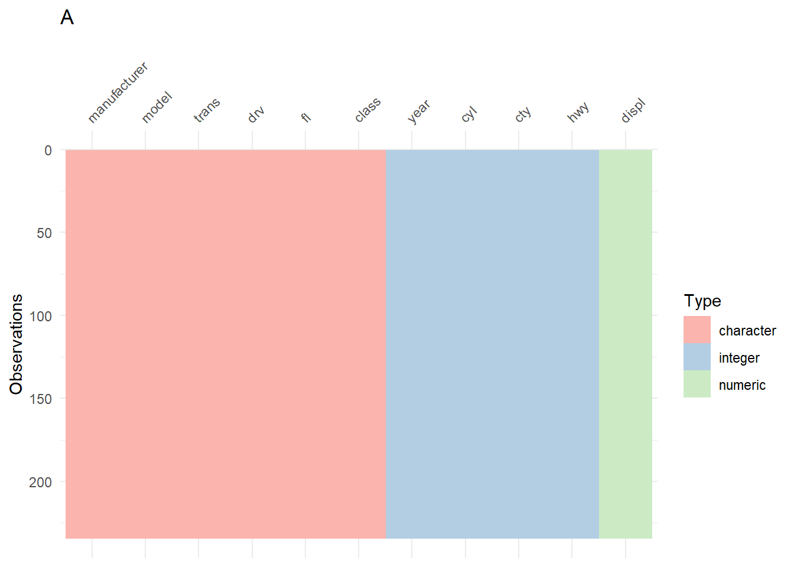
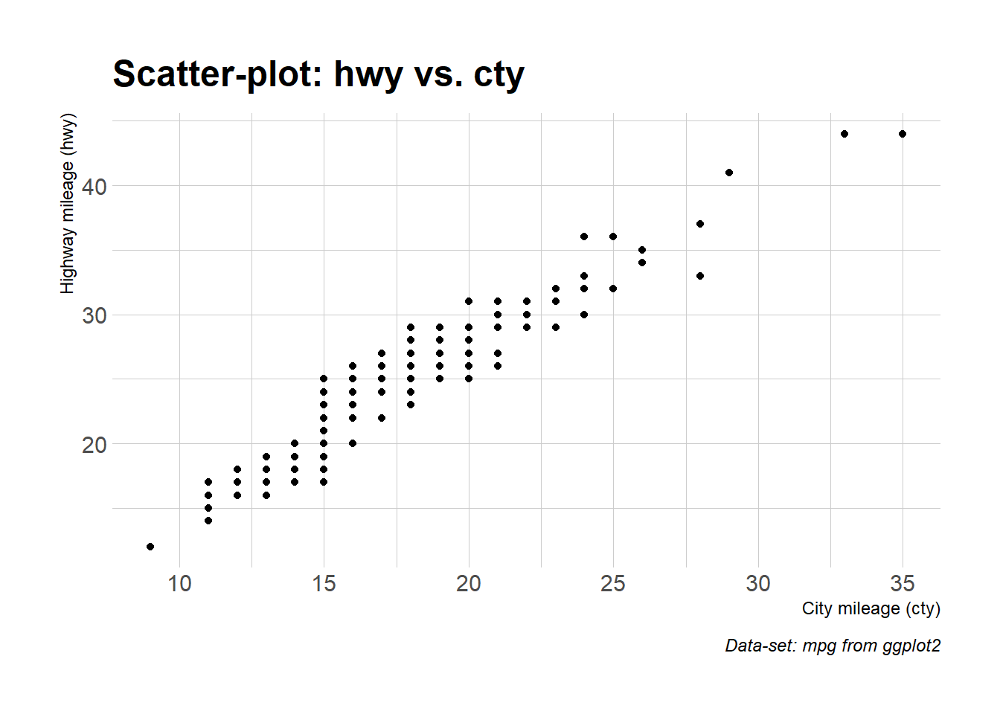
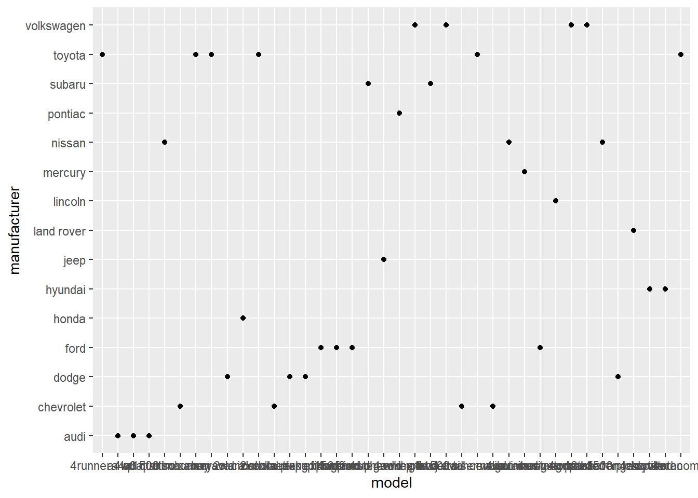
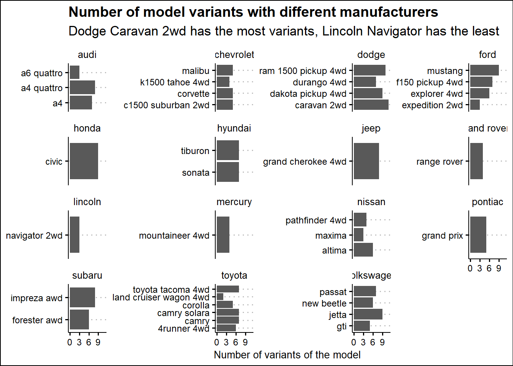
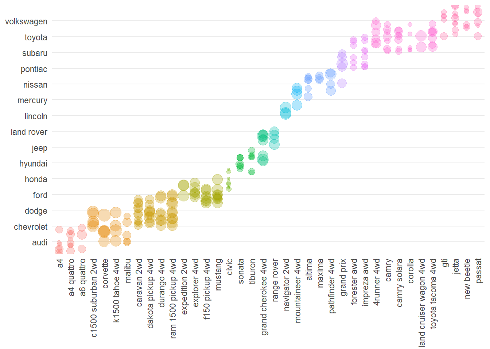

Chapter 2
First Steps
Solutions for this chapter are under construction.
2.2.1 Exercises
Question 1
List five functions that you could use to get more information about the mpg dataset.
Here are the five functions for exploring the mpg dataset from the ggplot2 package in R, along with example code: –
-
Use
str(mpg)to display the structure of the datasetmpgtelling what is the class of each variable.Code
str(mpg)tibble [234 × 11] (S3: tbl_df/tbl/data.frame) $ manufacturer: chr [1:234] "audi" "audi" "audi" "audi" ... $ model : chr [1:234] "a4" "a4" "a4" "a4" ... $ displ : num [1:234] 1.8 1.8 2 2 2.8 2.8 3.1 1.8 1.8 2 ... $ year : int [1:234] 1999 1999 2008 2008 1999 1999 2008 1999 1999 2008 ... $ cyl : int [1:234] 4 4 4 4 6 6 6 4 4 4 ... $ trans : chr [1:234] "auto(l5)" "manual(m5)" "manual(m6)" "auto(av)" ... $ drv : chr [1:234] "f" "f" "f" "f" ... $ cty : int [1:234] 18 21 20 21 16 18 18 18 16 20 ... $ hwy : int [1:234] 29 29 31 30 26 26 27 26 25 28 ... $ fl : chr [1:234] "p" "p" "p" "p" ... $ class : chr [1:234] "compact" "compact" "compact" "compact" ... -
Employ
glimpse(mpg)to obtain a concise overview of the dataset’s structure and its first few rows, offering a detailed glimpse of the data. It is similar to the previous functionstr()Code
glimpse(mpg)Rows: 234 Columns: 11 $ manufacturer <chr> "audi", "audi", "audi", "audi", "audi", "audi", "audi", "… $ model <chr> "a4", "a4", "a4", "a4", "a4", "a4", "a4", "a4 quattro", "… $ displ <dbl> 1.8, 1.8, 2.0, 2.0, 2.8, 2.8, 3.1, 1.8, 1.8, 2.0, 2.0, 2.… $ year <int> 1999, 1999, 2008, 2008, 1999, 1999, 2008, 1999, 1999, 200… $ cyl <int> 4, 4, 4, 4, 6, 6, 6, 4, 4, 4, 4, 6, 6, 6, 6, 6, 6, 8, 8, … $ trans <chr> "auto(l5)", "manual(m5)", "manual(m6)", "auto(av)", "auto… $ drv <chr> "f", "f", "f", "f", "f", "f", "f", "4", "4", "4", "4", "4… $ cty <int> 18, 21, 20, 21, 16, 18, 18, 18, 16, 20, 19, 15, 17, 17, 1… $ hwy <int> 29, 29, 31, 30, 26, 26, 27, 26, 25, 28, 27, 25, 25, 25, 2… $ fl <chr> "p", "p", "p", "p", "p", "p", "p", "p", "p", "p", "p", "p… $ class <chr> "compact", "compact", "compact", "compact", "compact", "c… -
Run
summary(mpg)to generate a statistical summary of the variables within thempgdataset, providing measures like mean, median, and quartiles.Code
summary(mpg)manufacturer model displ year Length:234 Length:234 Min. :1.600 Min. :1999 Class :character Class :character 1st Qu.:2.400 1st Qu.:1999 Mode :character Mode :character Median :3.300 Median :2004 Mean :3.472 Mean :2004 3rd Qu.:4.600 3rd Qu.:2008 Max. :7.000 Max. :2008 cyl trans drv cty Min. :4.000 Length:234 Length:234 Min. : 9.00 1st Qu.:4.000 Class :character Class :character 1st Qu.:14.00 Median :6.000 Mode :character Mode :character Median :17.00 Mean :5.889 Mean :16.86 3rd Qu.:8.000 3rd Qu.:19.00 Max. :8.000 Max. :35.00 hwy fl class Min. :12.00 Length:234 Length:234 1st Qu.:18.00 Class :character Class :character Median :24.00 Mode :character Mode :character Mean :23.44 3rd Qu.:27.00 Max. :44.00 -
Utilize
dfSummary(mpg)from thesummarytoolspackage to obtain a comprehensive summary report with various statistics and visualizations for thempgdataset.Code
library(summarytools) st_options(plain.ascii = FALSE) print( summarytools::dfSummary(mpg, plain.ascii = FALSE, headings = FALSE, display.labels = FALSE, silent = TRUE), method = "render")No Variable Stats / Values Freqs (% of Valid) Graph Valid Missing 1 manufacturer [character] 1. dodge 2. toyota 3. volkswagen 4. ford 5. chevrolet 6. audi 7. hyundai 8. subaru 9. nissan 10. honda [ 5 others ] 37 ( 15.8% ) 34 ( 14.5% ) 27 ( 11.5% ) 25 ( 10.7% ) 19 ( 8.1% ) 18 ( 7.7% ) 14 ( 6.0% ) 14 ( 6.0% ) 13 ( 5.6% ) 9 ( 3.8% ) 24 ( 10.3% ) 
234 (100.0%) 0 (0.0%) 2 model [character] 1. caravan 2wd 2. ram 1500 pickup 4wd 3. civic 4. dakota pickup 4wd 5. jetta 6. mustang 7. a4 quattro 8. grand cherokee 4wd 9. impreza awd 10. a4 [ 28 others ] 11 ( 4.7% ) 10 ( 4.3% ) 9 ( 3.8% ) 9 ( 3.8% ) 9 ( 3.8% ) 9 ( 3.8% ) 8 ( 3.4% ) 8 ( 3.4% ) 8 ( 3.4% ) 7 ( 3.0% ) 146 ( 62.4% ) 
234 (100.0%) 0 (0.0%) 3 displ [numeric] Mean (sd) : 3.5 (1.3) min ≤ med ≤ max: 1.6 ≤ 3.3 ≤ 7 IQR (CV) : 2.2 (0.4) 35 distinct values 
234 (100.0%) 0 (0.0%) 4 year [integer] Min : 1999 Mean : 2003.5 Max : 2008 1999 : 117 ( 50.0% ) 2008 : 117 ( 50.0% ) 
234 (100.0%) 0 (0.0%) 5 cyl [integer] Mean (sd) : 5.9 (1.6) min ≤ med ≤ max: 4 ≤ 6 ≤ 8 IQR (CV) : 4 (0.3) 4 : 81 ( 34.6% ) 5 : 4 ( 1.7% ) 6 : 79 ( 33.8% ) 8 : 70 ( 29.9% ) 
234 (100.0%) 0 (0.0%) 6 trans [character] 1. auto(av) 2. auto(l3) 3. auto(l4) 4. auto(l5) 5. auto(l6) 6. auto(s4) 7. auto(s5) 8. auto(s6) 9. manual(m5) 10. manual(m6) 5 ( 2.1% ) 2 ( 0.9% ) 83 ( 35.5% ) 39 ( 16.7% ) 6 ( 2.6% ) 3 ( 1.3% ) 3 ( 1.3% ) 16 ( 6.8% ) 58 ( 24.8% ) 19 ( 8.1% ) 
234 (100.0%) 0 (0.0%) 7 drv [character] 1. 4 2. f 3. r 103 ( 44.0% ) 106 ( 45.3% ) 25 ( 10.7% ) 
234 (100.0%) 0 (0.0%) 8 cty [integer] Mean (sd) : 16.9 (4.3) min ≤ med ≤ max: 9 ≤ 17 ≤ 35 IQR (CV) : 5 (0.3) 21 distinct values 
234 (100.0%) 0 (0.0%) 9 hwy [integer] Mean (sd) : 23.4 (6) min ≤ med ≤ max: 12 ≤ 24 ≤ 44 IQR (CV) : 9 (0.3) 27 distinct values 
234 (100.0%) 0 (0.0%) 10 fl [character] 1. c 2. d 3. e 4. p 5. r 1 ( 0.4% ) 5 ( 2.1% ) 8 ( 3.4% ) 52 ( 22.2% ) 168 ( 71.8% ) 
234 (100.0%) 0 (0.0%) 11 class [character] 1. 2seater 2. compact 3. midsize 4. minivan 5. pickup 6. subcompact 7. suv 5 ( 2.1% ) 47 ( 20.1% ) 41 ( 17.5% ) 11 ( 4.7% ) 33 ( 14.1% ) 35 ( 15.0% ) 62 ( 26.5% ) 
234 (100.0%) 0 (0.0%) Generated by summarytools 1.0.1 (R version 4.3.1)
2023-10-23 -
Enhance data exploration with
vis_dat(mpg)from thevisdatpackage, which offers interactive visualizations to better understand the data-set’s contents and identify missing values.Code
library(visdat) visdat::vis_dat(mpg) + scale_fill_brewer(palette = "Pastel1") + labs(title = "An overview of the data using vis_dat() from visdat package")
Question 2
How can you find out what other datasets are included with ggplot2?
To find out what datasets are included with the ggplot2 package, you can use the data() function. You can use the data() function to list all the datasets available in the ggplot2 package.
Code
data(package = "ggplot2")Question 3
Apart from the US, most countries use fuel consumption (fuel consumed over fixed distance) rather than fuel economy (distance travelled with fixed amount of fuel). How could you convert cty and hwy into the European standard of l/100km?
In the R formula, we convert miles per gallon (mpg) to liters per 100 kilometers (L/100km). The conversion factor, 235.21, is used to perform the conversion. To convert mpg to L/100km, we divide the conversion factor by the mpg value.
\[ \text{L/100km} = \frac{235.21}{\text{mpg}} \tag{1}\] The conversion factor of 235.21 is derived from the following logic:
- 1 mile is equal to approximately 1.609 kilometers.
- 1 gallon is equal to approximately 3.785 liters.
To convert from miles per gallon (mpg) to liters per 100 kilometers (L/100km), we need to reverse the units. So, we divide the number of miles (1 mile) by the number of gallons (1 gallon) to get the number of kilometers per liter. This can be expressed as:
\[ \text{Kilometers per Liter} = \frac{1 \text{ mile}}{1 \text{ gallon}} \times \frac{1.609 \text{ kilometers}}{1 \text{ mile}} \times \frac{1 \text{ liter}}{3.785 \text{ gallons}} \approx 0.4251 \text{ kilometers per liter} \tag{2}\]
Now, to express fuel efficiency in liters per 100 kilometers, we need to scale up by 100:
\[ \text{L/100km} = \frac{1}{0.4251} \times 100 \approx 235.21 \text{ L/100km per 1 kilometer per liter} \tag{3}\]
So, when you divide 235.21 by miles per gallon (mpg), you are effectively converting from miles per gallon to liters per 100 kilometers, accounting for the differences in units and scaling by 100 to express the consumption over a distance of 100 kilometers.
Now, you can include the R code and LaTeX explanation in an R Markdown document for a more structured presentation. When you knit the R Markdown document, it will generate a formatted document with both the code and explanations.
Code
# Conversion factor from mpg to L/100km
conversion_factor <- 235.21
mpg |>
mutate(
cty = conversion_factor/cty,
hwy = conversion_factor/hwy
) |>
slice_head(n = 5) |>
gt() |> gtExtras::gt_theme_538() |>
fmt_number(columns = cty:hwy,
decimals = 2)| manufacturer | model | displ | year | cyl | trans | drv | cty | hwy | fl | class |
|---|---|---|---|---|---|---|---|---|---|---|
| audi | a4 | 1.8 | 1999 | 4 | auto(l5) | f | 13.07 | 8.11 | p | compact |
| audi | a4 | 1.8 | 1999 | 4 | manual(m5) | f | 11.20 | 8.11 | p | compact |
| audi | a4 | 2.0 | 2008 | 4 | manual(m6) | f | 11.76 | 7.59 | p | compact |
| audi | a4 | 2.0 | 2008 | 4 | auto(av) | f | 11.20 | 7.84 | p | compact |
| audi | a4 | 2.8 | 1999 | 6 | auto(l5) | f | 14.70 | 9.05 | p | compact |
Question 4
Which manufacturer has the most models in this dataset? Which model has the most variations? Does your answer change if you remove the redundant specification of drive train (e.g. “pathfinder 4wd”, “a4 quattro”) from the model name?
As we can see below in Table 2, Toyota has the most models in the data-set.
Code
# Group 'mpg' data by 'manufacturer.'
mpg |>
group_by(manufacturer) |>
# Count distinct 'model' values for each manufacturer.
summarize(models = n_distinct(model)) |>
# Sort in descending order based on 'n_models.'
arrange(desc(models)) |>
# Select the top 5 manufacturers.
slice_head(n = 5) |>
# Create a table and apply a specific theme to it.
gt() |> gt_theme_538()| manufacturer | models |
|---|---|
| toyota | 6 |
| chevrolet | 4 |
| dodge | 4 |
| ford | 4 |
| volkswagen | 4 |
And, as we can see in the Table 3 below, the Dodge Caravan (2 wheel drive) model has the most variations, i.e., 11 in number.
Code
mpg |>
count(manufacturer, model, sort = TRUE) |>
slice_head(n = 5) |>
rename(variations = n) |>
gt() |> gt_theme_538()| manufacturer | model | variations |
|---|---|---|
| dodge | caravan 2wd | 11 |
| dodge | ram 1500 pickup 4wd | 10 |
| dodge | dakota pickup 4wd | 9 |
| ford | mustang | 9 |
| honda | civic | 9 |
2.3.1 Exercises
Question 1
How would you describe the relationship between cty and hwy? Do you have any concerns about drawing conclusions from that plot?
There is a positive correlation between cty and hwy , as shown in Figure 1. However, one concern we have is whether this correlation is causative in nature, or is it a direct correlation, or is it caused by a third unknown variable, i.e. confounding.
Confounding is a distortion of the association between independent and dependent variables. It occurs when a third variable is independently associated with both. This can happen when the primary exposure of interest is mixed up with some other factor that is associated with the outcome.
For example, perhaps it is the engine displacement that determines both city and highway mileage, and both have a common link, rather than a direct association.
Note: I am using theme_ipsum() from the hrbrthemes package (Rudis 2020).
Code
mpg |>
ggplot(aes(x = cty, y = hwy)) +
geom_point() +
labs(x = "City mileage (cty)",
y = "Highway mileage (hwy)",
title = "Scatter-plot: hwy vs. cty",
caption = "Data-set: mpg from ggplot2") +
hrbrthemes::theme_ipsum()
Question 2
What does ggplot(mpg, aes(model, manufacturer)) + geom_point() show? Is it useful? How could you modify the data to make it more informative?
The code ggplot(mpg, aes(model, manufacturer)) + geom_point() is used to create a scatter plot, where the mpg dataset is being used, and it’s mapping the model variable to the x-axis and the manufacturer variable to the y-axis. The geom_point() function is responsible for adding points to the plot.
Code
ggplot(mpg, aes(model, manufacturer)) + geom_point()
Here’s a detailed explanation of why this code and its resulting Figure 2 isn’t useful:
-
Data Mapping:
-
modelis mapped to the x-axis: The car models don’t have a specific order, i.e. it is a categorical variable, not an ordinal or continuous variable. -
manufactureris mapped to the y-axis: Again, manufacturer is a categorical variable with no specific order. Thus, representing it on y-axis is not advisable.
-
-
Visualization:
- The plot will consist of multiple points where each point represents a combination of a car model and its manufacturer. As, we can expect, each observation will have a unique model. There is no specific information or pattern being displayed as scatter plot doesn’t connect the points.
- The plot suffers from over-plotting if there are many data points when a single model has many variants (
alphaaesthetic has not been defined here). Further, since each unique model and manufacturer combination will be displayed as a separate point, it is difficult to discern patterns or relationships. - Thus, this plot has very limited usefulness is identifying trends or make specific insights.
Modifications for More Informativeness: To make the plot more informative, you can consider the following modifications:
-
Changing the plot geom: If our purpose is to show the number of model variants for each manufacturer, we might shift to a bar plot, with faceting on the manufacturer as shown in
Code
mpg |> count(manufacturer, model) |> ggplot(aes(x = n, y = model)) + geom_bar(stat = "identity") + facet_wrap(~ manufacturer, scales = "free_y") + theme_clean() + labs(x = "Number of variants of the model", y = NULL, title = "Number of model variants with different manufacturers", subtitle = "Dodge Caravan 2wd has the most variants, Lincoln Navigator has the least")
Figure 3: Faceted horizontal bar plot showing number of variants for different car models in mpg dataset -
Labels, Title, Color and Size Aesthetics: If we insist on using the same plot as given in the question, we can use additional aesthetics like color or point size to encode more information. For instance, you could use color to represent a third variable, such as “class” (economy, midsize, compact, etc.), and point size to represent another variable, like “displacement.” We can further sort the manufacturers and models alphabetically.
Code
man_lev <- mpg |> distinct(manufacturer) |> pull(manufacturer) mod_lev <- mpg |> group_by(manufacturer) |> arrange(manufacturer, model) |> pull(model) |> unique() mpg |> # reorder the manufacturers by alphabetically and models by numbers mutate( manufacturer = fct(manufacturer, levels = man_lev), model = fct(model, levels = mod_lev) ) |> ggplot(aes(x = model, y = manufacturer, size = displ, col = manufacturer)) + geom_point(alpha = 0.3, width = 0, height = 1) + # geom_text(aes(label = paste0(model, ":", year))) + theme_classic()
Figure 4: Adding other informative aesthetics to the points in given plot
These modifications can help you gain more insight from your data and make your visualization more informative. The choice of modifications should depend on the specific questions you want to answer and the nature of your dataset.
Question 3
Describe the data, aesthetic mappings and layers used for each of the following plots. You’ll need to guess a little because you haven’t seen all the datasets and functions yet, but use your common sense! See if you can predict what the plot will look like before running the code.
ggplot(mpg, aes(cty, hwy)) + geom_point()ggplot(diamonds, aes(carat, price)) + geom_point()ggplot(economics, aes(date, unemploy)) + geom_line()ggplot(mpg, aes(cty)) + geom_histogram()